전자산업기사 (2008-03-02 기출문제)
1과목: 전자회로
1. 트랜지스터의 기능 중 on, off 스위치 회로로 사용하는 영역은?
- 선형영역
- 포화영역
- 활성영역
- 역활성영역
(정답률: 60%)

2. 발진기에 대한 설명 중 옳지 않은 것은?
- 직류를 공급하여 교류를 얻어내는 회로를 말한다.
- 발진기를 처음 동작시키기 위해서는 회소한 한주기의 교류를 입력시켜야 한다.
- 정상적인 발진을 위해서는 Barkhausen의 발진조건을 만족시켜야 한다.
- 선택도 Q가 큰 동조회로를 사용할수록 주파수 안정도가 양호하다.
(정답률: 60%)
3. 다음 그림은 피변조파의 주파수 스펙트럼(spectrum)을 나타낸 것이다. 어떠한 변조 방식인가? (단, fc는 반송파이고, fm은 변조파이다.)
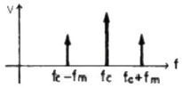
- AM
- FM
- PM
- PWM
(정답률: 78%)
4. 부궤환 증폭회로에서 거의 변화되지 않는 것은?
- 잡음
- 비직선 일그러짐
- 이득-대역폭(GB) 적
- 입ㆍ출력 임피던스
(정답률: 62%)
5. 다음과 같은 가산기의 출력전압 eo는 몇 [V] 인가?
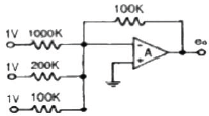
- -1.2
- -1.6
- -2.5
- -7.5
(정답률: 80%)
6. 다음과 같은 회로의 명칭은?
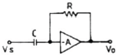
- 부호변환기
- 가산기
- 미분연사기
- 적분연산기
(정답률: 98%)
7. CE 증폭기에서 이미터와 접지 사이에 저항을 삽입했을 경우 나타나는 현상에 대한 설명으로 적합하지 않은 것은?
- 입력저항이 증가한다.
- 출력저항이 감소한다.
- 전류이득은 거의 변화가 없다.
- 전압이득은 감소하고 동작점은 안정된다.
(정답률: 60%)
8. 초크입력형과 비교한 콘덴서 입력형 회로의 특징에 대한 설명으로 적합하지 않은 것은?
- 첨두역전압은 상당히 높다.
- 전압변동률은 좋지 않다.
- 큰 부하전류에 사용이 곤란하다.
- 맥동률은 부하저항이 적을수록 좋다.
(정답률: 64%)
9. 다음 회로에서 전압이득(Vo/Vi)은? (단, Ri=∞, -Av=∞ 임)
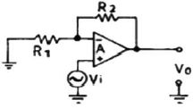
- R2/R1
- -R1/R2
- 1+(R2/R1)
- 1-(R1/R2)
(정답률: 64%)
10. 병렬 부궤환 회로의 특징 중 옳지 않은 것은?
- 이득이 감소된다.
- 주파수 대역폭이 증가된다.
- 입력 임피던스가 증가된다.
- 일그러짐이 감소된다.
(정답률: 77%)
11. 전력증폭기의 직류 공급 전압은 15[V], 전류는 300[mA]이고 효율은 78.5[%]일 때 부하에서의 출력 전력은?
- 약 3.53[W]
- 약 4.50[W]
- 약 353[W]
- 약 450[W]
(정답률: 81%)
12. 피어스 B-E형 수정 발진 회로와 가장 관계가 깊은 발진 회로는?
- 콜피츠 발진회로
- 하틀리 발진회로
- 동조형 발진회로
- 브리지형 RC 발진회로
(정답률: 77%)
13. 어떤 증폭회로의 입력전력이 1[W], 출력전력이 10[W] 일 때 전력이득은 약 몇 [dB] 인가?
- 0
- 10
- 20
- 40
(정답률: 80%)
14. RC 결합 증폭기에서 저주파 특성을 주로 제한하는 것은?
- 극간 용량
- 결합 콘덴서 용량
- 출력 임피던스
- 입력 임피던스
(정답률: 56%)
15. 전원장치에서 무부하일 때의 단자 전압이 11[V]이고, 전부하일 때의 단자전압이 10[V]이라면 전압 변동률은 약 몇 % 인가?
- 9 [%]
- 10 [%]
- 15 [%]
- 20 [%]
(정답률: 71%)
16. 다음 중 정현파 입력에 의하여 구형파의 출력 파형을 얻는 회로는?
- 슈미트트리거 회로
- 부우스트랩 회로
- 샤바로프 회로
- 밀러 적분회로
(정답률: 92%)
17. 전압이득이 40[dB]인 저주파증폭기에서 출력신호의 왜율이 10[%]일 때, 이를 1[%]로 개선하기 위해서는 부궤환율(β)은 얼마로 하여야 하는가?
- 0.01
- 0.03
- 0.⑤
- 0.09
(정답률: 81%)
18. RC 결합 증폭기에서 중역주파수 대역 이득이 120 이었을 때 고역 차단점에서의 전압이득은 약 얼마인가?
- 120
- 100
- 85
- 60
(정답률: 42%)
19. 변조도 60[%]의 AM에서 반송파의 출력이 400[mW] 일 때, 피변조파의 출력은 약 몇 [mW] 인가?
- 180
- 354
- 420
- 472
(정답률: 73%)
20. 이득이 100인 증폭기에서 0.09의 전압부궤환을 걸면 이득은 약 얼마인가?
- 1
- 9
- 10
- 12
(정답률: 66%)
2과목: 전기자기학 및 회로이론
21. 맥스웰(Maxwell) 기본 이론이 아닌 것은?
- 자계의 시간적 변화에 따라 전계의 회전이 생긴다.
- 전도 전류와 변위전류는 자계를 발생시킨다.
- 고립된 자극이 존재한다.
- 전하에서 전속선이 발산한다.
(정답률: 86%)
22. 10[A]가 흐르는 1m 간격의 평행도선 사이의 1m당 작용하는 힘은 몇 [N] 인가?
- 1.0 N
- 10-5 N
- 2×10-5 N
- 2×10-7 N
(정답률: 65%)
23. 같은 양의 점전하가 진공 중에 1m 간격으로 있을 때 9×105 N의 힘이 작용하였다. 이 점전하의 전기량은 몇 [C] 인가?
- 9×10-2
- 9×10-4
- 1×10-2
- 1×10-4
(정답률: 35%)
24. 다음 중 div i = 0에 대한 설명으로 옳지 않은 것은?
- 도체내에 흐르는 전류는 연속적이다.
- 도체내에 흐르는 전류는 일정하다.
- 단위시간당 전하의 변화는 없다.
- 도체내에 전류가 흐르지 않는다.
(정답률: 59%)
25. 공기 중에 있는 지름 1m인 반원의 도선에 2A의 전류가 흐르고 있다면 원의 중심의 자속밀도는 몇 Wb/m2 인가?
- 0.5π×10-7 Wb/m2
- 2π×10-7 Wb/m2
- 4π×10-7 Wb/m2
- 8π×10-7 Wb/m2
(정답률: 43%)
26. 전기 쌍극자에 의한 전계의 세기는 쌍극자로부터의 거리 r에 대해서 어떠한가?
- r2 에 반비례
- r3 에 반비례
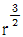
에 반비례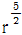
에 반비례
(정답률: 90%)
27. 유전율이 ε1, ε2인 유전체가 접해 있는 경계면에서 전속선의 방향이 그림과 같을 때 다음 중 옳지 않은 것은?
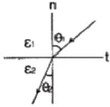
- E1sinθ1 = E2sinθ2
- ε1 ＞ ε2 일 때 θ1 ＞ θ2
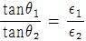
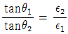
(정답률: 56%)
28. 전자유도에 의해서 회로에 발생하는 기전력은 자속쇄 교수의 시간에 대한 변화율에 비례하며 기전력의 방향은 자속의 변화를 방해하는 방향임을 표시하는 법칙으로 알맞은 것은?
- 암페어 법칙과 비오사바르 법칙
- 패러데이 법칙과 렌쯔의 법칙
- 플레밍 법칙과 노이만 법칙
- 가우스 법칙과 옴의 법칙
(정답률: 81%)
29. 자유공간의 고유임피던스
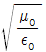
의 값은 몇 [Ω] 인가?- 60π
- 80π
- 100π
- 120π
(정답률: 71%)
30. 15[MHz]의 전자파의 파장은 몇 [m] 인가?
- 8 [m]
- 15 [m]
- 20 [m]
- 25 [m]
(정답률: 66%)
31. 실효값 220[V]인 정현파 교류 전압을 인가했을 때 실효값 5[A] 전류가 흐른다면 피상전력은?
- 1100 [VA]
- 550 [VA]
- 1200 [W]
- 560 [W]
(정답률: 78%)
32.
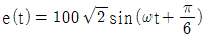
와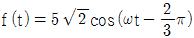
와의 위상차는?- 0°
- 40°
- 60°
- 150°
(정답률: 77%)
33. 그림과 같은 회로에서 전달함수
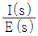
를 구하면?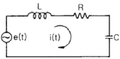
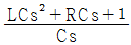
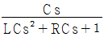
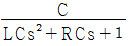
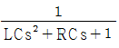
(정답률: 59%)
34. R-L-C 직렬회로에서 전원전압을 E라하고, L 및 C에 걸리는 전압을 각각 EL 및 EC 라 할 때 선택도 Q는?
- EL/E
- EC/EL
- E/EC
- E/EL
(정답률: 62%)
35. V = 100cos(120πt + π/3)[V]인 교류에서 t = 0일 때 순시전압은 몇 [V] 인가?
- 0
- 50
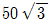
- 100
(정답률: 59%)
36. 다음 중 정현파 교류 전압의 파형률은?
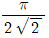
- 2/π
- π/2
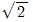
(정답률: 76%)
37. 그림과 같은 회로에서 임피던스가 주파수에 관계없이 항상 일정한 값 R로 되기 위한 조건은?
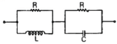
- R = L = C
- L = C
- R2 = L/C
- R2 = C/L
(정답률: 88%)
38. 그림과 같은 대칭 T형 회로에서 출력측 2-2'를 단락시 켰을 때 입력측 1-1'의 임피던스 Z1S[Ω]는?
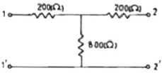
- 360
- 400
- 800
- 1000
(정답률: 49%)
39. 그림과 같은 직ㆍ병렬 회로에서 10[Ω] 저항 양단에 걸리는 전압은?
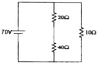
- 7/6 [V]
- 7 [V]
- 10 [V]
- 70 [V]
(정답률: 42%)
40. 함수 f(t) = A를 Laplace 변환하면?
- A
- A/s
- As
- 1
(정답률: 85%)
3과목: 전자계산기일반
41. 마이크로컴퓨터의 입ㆍ출력 구성 요소가 아닌 것은?
- 입ㆍ출력 인터페이스
- 입ㆍ출력 포트(port)
- 버스
- 디코더
(정답률: 88%)
42. 다음 중 명령어의 주소부에 데이터를 직접 넣어주는 방식은?
- 직접(direct) 주소지정
- 즉시(immediate) 주소지정
- 상대(relative) 주소지정
- 레지스터(register) 주소지정
(정답률: 75%)
43. 운영체제에 대한 설명으로 가장 옳은 것은?
- 운영체제는 사용자 스스로 제공한다.
- 프로그래머가 작성한 언어를 기계어로 번역하는 프로그램이다.
- 어떤 용도를 위해 범용 프로그램과 사용자가 직접 작성한 프로그램을 말한다.
- 컴퓨터 시스템의 효율성을 높이고, 사용자에게 편리를 제공하기 위한 소프트웨어 체제를 말한다.
(정답률: 85%)
44. 명령(Instruction)의 구성 요소가 아닌 것은?
- Operation code
- Format
- Operand
- Comma
(정답률: 77%)
45. 다음 중 우수한 하드웨어의 조건으로 적합하지 못한 것은?
- 신속한 처리 능력을 가져야 한다.
- 신뢰성이 높아야 한다.
- 기억 용량은 사용할 만큼 고정되어 있어야 한다.
- 다양한 많은 양의 자료를 처리해야 한다.
(정답률: 80%)
46. 컴파일 된 목적 프로그램은 무슨 과정을 거쳐야 수행 가능한 프로그램이 되는가?
- 디버그(debug)
- 링크(link)
- 런(run)
- 에디터(editor)
(정답률: 66%)
47. 자기디스크의 CAV(constant angular velocity : 등각 속도) 방식에 대한 설명으로 옳지 않은 것은?
- 일정한 속도로 회전하는 상태에서도 데이터를 동일한 비율로 액세스할 수 있다.
- 트랙의 저장 밀도는 모두 같다.
- 회전 구동장치가 간단하다.
- 모든 트랙에 저장되는 데이터 비트 수는 같다.
(정답률: 69%)
48. 시프트 레지스터(shift register)에 있는 임의의 2진수를 4번 왼쪽으로 자리이동(shift-left) 하였다. 이 때 결과로 옳은 것은? (단, 새로운 비트는 0 이다.)
- (원래의 수)×4
- (원래의 수)×16
- (원래의 수)÷4
- (원래의 수)÷16
(정답률: 88%)
49. 컴퓨터에서 사용하는 코드들 중 오류(error) 검출이 불가능한 코드는?
- BCD
- biquinary
- ring counter
- 2-out-of-5
(정답률: 59%)
50. 논리회로에서 결과 값을 얻기 위해 일정한 시간 동안 파형을 유지하고 있어야 한는 시간을 무엇이라 하는가?
- Propagation delay time
- Setup time
- Hold time
- Access time
(정답률: 80%)
51. 컴퓨터가 채택하고 있는 수치 자료의 표현 방법에 해당하지 않는 것은?
- 부호 절대치 표현
- 1의 보수 표현
- 4진수 표현
- 부동 소수점 표현
(정답률: 83%)
52. 다음 마이크로 오퍼레이션들은 어떤 명령어의 실행 사이클을 나타낸 것인가?
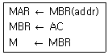
- BSA(Branch and Save Return Address)
- ISZ(Increment and Skip If Zero)
- LDA(Load To AC)
- STA(Store AC)
(정답률: 49%)
53. 다음 중 인터럽트 수행을 위해서 기본적으로 요구되는 요소가 아닌 것은?
- 큐
- 인터럽트 서브루틴
- 스택
- 인터럽트 요구신호
(정답률: 67%)
54. 다음 순서도 기호의 명칭은?
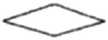
- 처리
- 준비
- 단말기
- 비교, 판단
(정답률: 90%)
55. 다음 기억장치 중 random access가 불가능한 기억장치는?
- 자기디스크
- USB 메모리
- 자기테이프
- RAM
(정답률: 59%)
56. 가산기능과 보수기능만 있는 산술논리연산장치(ALU)를 이용하여 A-B를 하고자 할 때 옳은 방법은?
- F=A-B
- F=A-B+1
- F=A+B'+1
- F=A'+B+1
(정답률: 72%)
57. 어떤 시스템에서 데이터의 전송 속도가 200bps라고 할 때 이 시스템에 10초간 전송하는 데이터는 모두 몇 bit 인가?
- 2
- 20
- 200
- 2000
(정답률: 94%)
58. 주소 신호가 nro일 때, 주기억 용량은?
- 2n
- 2n
- n2
- 102n
(정답률: 79%)
59. 정보의 내부표현에서 수치정보를 표현하는데 만족시켜야 할 사항이 아닌 것은?
- 10진수와 상호변환이 용이해야 한다.
- 데이터처리 및 CPU 내에서 이동이 용이해야 한다.
- 기억장치의 기억공간을 많이 차지해야 한다.
- 한정된 수의 비트로 나타내므로 정밀도가 높아야 한다.
(정답률: 88%)
60. 캐시 액세스시간 Tc = 50ns이고, 주기억장치 액세스시간 Tn = 400[ns]인 시스템에서 적중률이 70%일 때의 평균기억장치 액세스 시간은?
- 155ns
- 120ns
- 100ns
- 80ns
(정답률: 68%)
4과목: 전자계측
61. 다음 중 오차백분율에 해당하는 식은? (단, M은 측정값, T는 참값이다.)
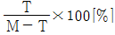
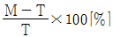
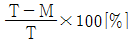
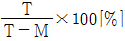
(정답률: 71%)
62. 최대지시 1[V]인 직류전압계의 최대 전류가 1[mA]라면 직류 전압계로 최대지시 100[V]의 전압계를 만들고자 한다. 사용될 배율 저항은?
- 90 [kΩ]
- 99 [kΩ]
- 100 [kΩ]
- 101 [kΩ]
(정답률: 66%)
63. 전압 제어 발진기 방식을 사용한 디지털 전압계의 구성요소가 아닌 것은?
- 디지털 표시장치
- 기준시간 발생기
- 순서기
- 정류기
(정답률: 75%)
64. 그림과 같은 회로가 정저항 회로가 되기 위한 C의 값은?
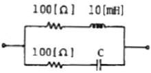
- 1 [μF]
- 5 [μF]
- 10 [μF]
- 20 [μF]
(정답률: 61%)
65. 그리드 딥 미터의 특징으로 옳지 않은 것은?
- 감도, 확도가 높다.
- 주파수 범위는 1.5~300[MHz] 정도이다.
- LC로 구성된 공진호로, 송신기, 수신기 회로 조정에 사용된다.
- 그리드 전류계가 dip 될 때 동조 다이얼의 주파수 눈금을 읽는다.
(정답률: 54%)
66. 수신기의 감도 측정에 별로 필요성이 없는 것은?
- 저주파 발진기
- 의사 공중선
- 신호 감쇠기
- 표준신호 발생기
(정답률: 68%)
67. 디지털 전압계의 구성요소에 속하지 않는 것은?
- 비교 회로
- 게이트 회로
- A/D 변환 회로
- 함수 발생 회로
(정답률: 64%)
68. 코일의 유효 면적이 5×10-4[m2], 권수 50회의 코일을 자속밀도 0.5[Wb/m2]의 평등자계 내에 회전하도록 달고, 이 코일에 1[mA]의 전류를 흘릴 때에 발생하는 가 동코일형 계기의 구동 토크는?
- 12500×10-9[Nㆍm]
- 1250×10-8[Nㆍm]
- 125×10-9[Nㆍm]
- 125×10-8[Nㆍm]
(정답률: 56%)
69. 마이크로파 측정에서 정재파 비가 2일 때 반사계수는?
- 1/2
- 1/3
- 1/4
- 1/5
(정답률: 71%)
70. 다음 중 링 시료법은 무엇을 측정하는데 사용되는가?
- 자화곡선
- 접지저항
- 위상
- 정전용량
(정답률: 88%)
71. 오실로스코프의 동기 방법이 아닌 것은?
- 내부 동기
- 전원 동기
- 외부 동기
- 신호 동기
(정답률: 77%)
72. 디지털 주파수계를 설명한 것 중 옳지 않은 것은?
- 10진 계수회로가 필요하다.
- 입력 전압을 증폭하여 파형을 펄스형으로 바꾼다.
- 정확한 시간 기준으로서 수정 발진기가 필요하다.
- 입력 피측정파를 분석하기 위하여 진폭레벨에 의한 A/D 컨버터가 필요하다.
(정답률: 78%)
73. 그림과 같은 코올라시 브리지(kohlraush bridge)에서 E1과 E2 사이에 저항을 R1[Ω], E2와 E3 사이가 R2[Ω], E3와 E1 사이가 R3[Ω] 이라면 E1은? (단, E1은 피측정 접지저항, E2, E3는 보조 접지이다.)
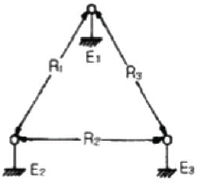
- E1 = 1/2(R1 - R2 + R3)
- E1 = 1/2(R1 - R2 - R3)
- E1 = 1/2(R1 + R2 - R3)
- E1 = 1/2(R2 + R3 - R1)
(정답률: 75%)
74. 피측정 회로로부터 전류를 전혀 흘리지 않기 때문에 회로의 부하 효과가 제거되는 정밀 전압 계측기는?
- VOM(Volt-Ohm Meter)
- DVM(Digital-Volt Meter)
- 전위차계
- 휘스톤 브리지
(정답률: 67%)
75. 다이라트론(thyratron)을 사용하는 소인발진기 회로는?
- 사인파 발진기
- 펄스파 발진기
- 구형파 발진기
- 톱니파 발진기
(정답률: 61%)
76. 열전형 계기의 표피 오차 방지책은?
- 고주파를 사용
- 초크코일 사용
- 미소전류 사용
- 가는열선 사용
(정답률: 89%)
77. 다음 중 저주파 측정에 가장 많이 사용되는 측정법은?
- 공진 브리지법
- 레헤르선 주파수계
- 흡수형 주파수계
- 헤테로다인 주파수계
(정답률: 63%)
78. 오실로스코프 프로브의 입력 캐패시턴스가 13[pF]일 때 600[Ω]의 신호원으로부터 발생된 신호를 3[dB] 감쇠시키는 프로브의 신호 주파수는 약 얼마인가?
- 20.4 [MHz]
- 40.8 [MHz]
- 64.1 [MHz]
- 78.8 [MHz]
(정답률: 59%)
79. 전력 증폭기에서 출력 저항을 측정하는 주된 이유는?
- 전류이득을 계산하기 위해서
- 전압이득을 계산하기 위해서
- 주파수응답 특성을 알기 위해서
- 부하저항과 정합을 이루기 위해서
(정답률: 76%)
80. 다음 중 계수형 주파수계로 측정할 수 없는 것은?
- 주기
- 분주비
- 주파수비
- 주파수 스펙트럼
(정답률: 76%)